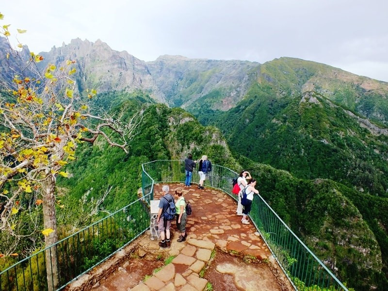
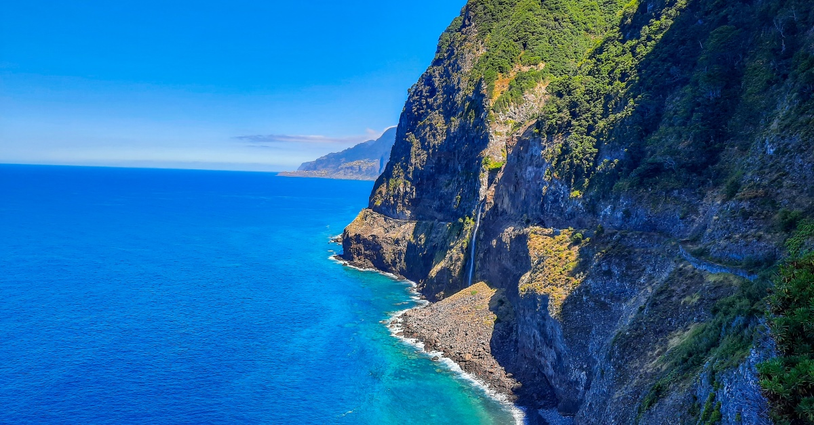

Atividades na Costa Norte

Levada dos Balcões
Trilho fácil com vistas únicas sobre a Laurissilva.

Véu da Noiva
Cascata icónica sobre o oceano Atlântico.

Piscinas Naturais
Piscinas vulcânicas de água salgada.